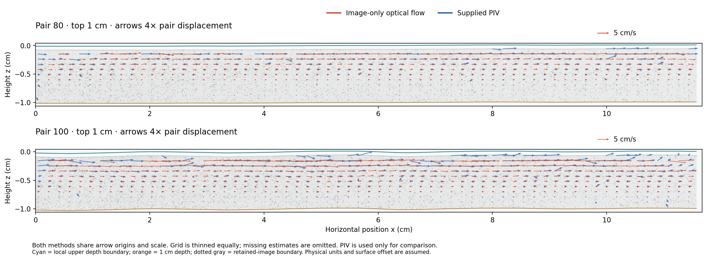

Find motion in the images
Masked image correlation supplies coarse candidates. Automatic particle-patch matches must agree in both directions before they initialize the local fits.
A conservative quadratic optical-flow workflow for the upper centimetre of water. Estimate motion from particle images, then compare it with classical PIV and infrared surface observations.
ExpLCL_1_03 · pairs 80 & 100
Top 10 mm · full image width

Both methods share arrow origins and scale. Arrows show four times the displacement between frames; missing estimates are omitted. The cyan line is the local surface and the orange line is 1 cm below it.
piv_quality: "finite" to reproduce the earlier comparison. The historical surface offset is inferred and remains configurable. Calibration units were subsequently confirmed.The gold stars come from the stored IR measurements in results.mat, matched to each image pair. They are added after the optical-flow field has been computed.
At these two times the fresh-dot measurements are missing, so the plotted values use USurf.usurffilt: interpolated and smoothed over 40 samples, approximately 0.93 seconds.
Raw IR image locations are user-specific and left unspecified. This site presents the derived measurements; it does not contain raw IR frames.
Download matched surface records ↗IR sample 11.112 s
0.889 ms after PIV frame A
IR sample 13.890 s
1.111 ms after PIV frame A
Scalar surface references are not direct measurements of the subsurface horizontal mean. They do not supply extra optical-flow coverage.
Masked image correlation supplies coarse candidates. Automatic particle-patch matches must agree in both directions before they initialize the local fits.
Robust quadratic registration allows translation, rotation, shear, stretch, and second-order changes across a patch. Affine and alternative quadratic fits check model sensitivity.
Track support, image agreement, reciprocal consistency, and alternative-model agreement screen the field. Diagonal gradients use stricter acceptance rules.
The method combines image-derived particle tracking with deformable image registration. It does not use a neural network or the supplied PIV velocities to seed the fit. It estimates deformation of image patches, not independently measured rotations of individual particles.
Reflections are not individually classified. Masks, background tests, and consistency checks reject some artifacts, but a consistent reflection can survive.
At each depth below the local surface, the optical-flow and PIV integrals use exactly the same supported horizontal intervals. The reported mean is the integral divided by that shared width. Missing segments are never bridged or treated as zero.
A fixed common domain means retaining only intervals available at every depth in the chosen band. That intersection is empty for these two examples; the available profiles use shared segments that can change with depth.
Port checked against the existing experimental fields. All acceptance flags were preserved across 10,515 queries. Maximum displacement difference: 7.11 × 10−15 pixels. Synthetic tests also cover signed motion, second-order deformation, derivatives, and missing coverage. These checks establish implementation consistency, not experimental ground-truth accuracy.
Install on macOS, Windows, or Linux with Python 3.10 or newer. A small generated example lets you check the complete pipeline before bringing in experimental data.
Name each pair NAME_imgA.tif and NAME_imgB.tif. Add a matching NAME_PIV.mat for native calibration, surface geometry, and later comparison—or provide your own geometry and calibration in the documented formats.
No training weights, large campaign MAT files, or workstation-specific image paths are required by the package.
# Check the installation with synthetic particles
quadratic-optical demo --output demo
# Process every named A/B pair in a directory
quadratic-optical run ./images \
--output ./results \
--config examples/metadata.json
# Optional: add IR surface comparisons
quadratic-optical run ./images \
--output ./results \
--config examples/metadata.json \
--ir-results /path/to/results.mat \
--experiment ExpLCL_1_03Open results/index.html for the batch report. Each pair includes quiver plots, gradients, depth profiles, and numerical exports.
{kind=link}
{kind=link}
{kind=link}
{kind=link}
{kind=link}
{kind=link}
{kind=link}
{kind=link}
{kind=link}
{kind=link}
{kind=link}
{kind=link}
{kind=link}
{kind=link}
{kind=link}